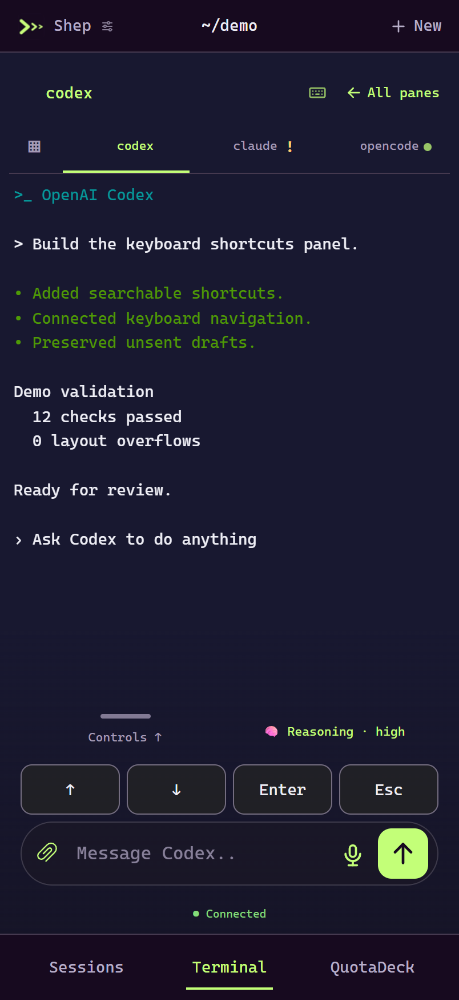
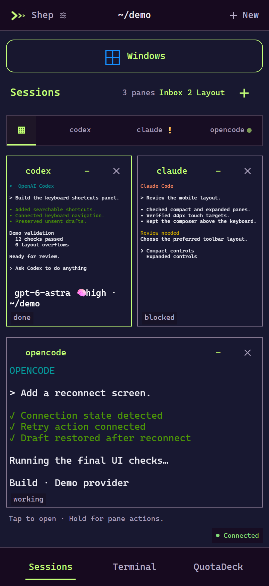
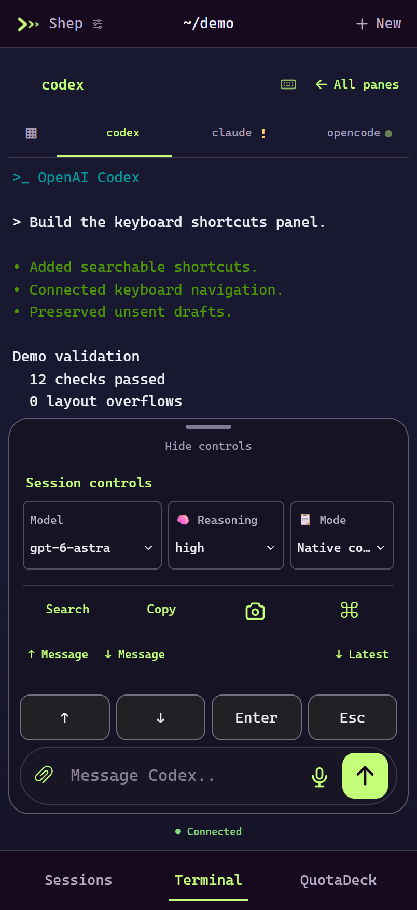
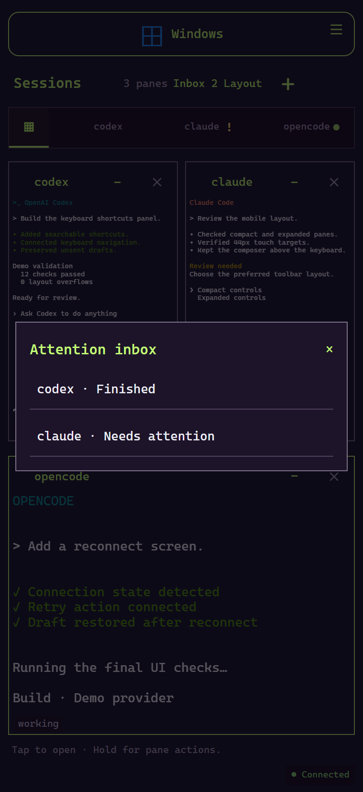
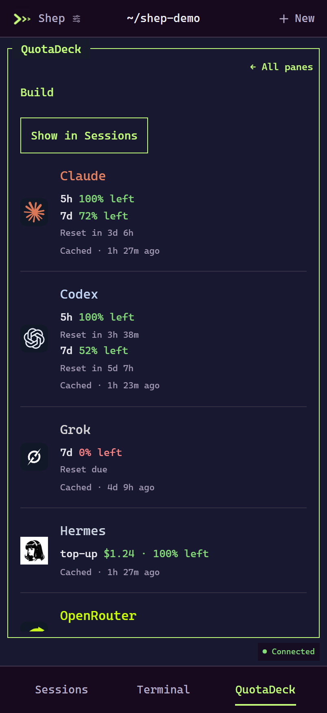

DESKTOP PREVIEW / 0.2
Your terminals.
On your phone.
Check on an agent, answer a prompt, or pick up where you left off. Your sessions keep running in Herdr on your computer.
Windows · macOS 13+ · Linux
Public preview · unsigned installers. Read the platform notes before installing.

A QUICK LOOK
From the grid to the conversation.
Recorded in Shep: a sample-agent walkthrough, then three real terminal jobs running together, theme switching, and QuotaDeck. The opening agent responses are fictional; the later tests, build checks, and local server run live. QuotaDeck shows the creator’s approved usage snapshot. Original instrumental soundtrack; captions available.
THE APP
Keep the useful parts close.
{kind=link}

See your sessions
Check the grid, minimize a pane, or open it full screen.
{kind=link}

Reach the controls
Keep arrow keys, Enter, and Escape near the composer. Expand the drawer for more.
{kind=link}

Know what needs you
Open the inbox to see an agent waiting for you or work that has finished.
QUOTADECK
Your usage, alongside your work.
QuotaDeck is built into Shep’s phone view. Check remaining limits, reset times, and credits without leaving your sessions.
Keep it as a companion pane, use a compact strip, or open the full view. It reads the desktop QuotaDeck plugin’s saved usage; set that up on your host first. Cached readings are labeled.
This screenshot shows the creator’s real usage snapshot, shared with permission. It’s a point-in-time reading, not a live feed on this website.

MAKE IT YOURS
Same terminals. Your look.
Keep the original purple and lime, or switch to Ghostty, Matrix, Windows XP, iMessage light or dark, AIM, plain black, or macOS. There are landscape themes and extra Ghostty variations too.
{kind=link}
{kind=link}
{kind=link}
GET CONNECTED
Install on your computer.
Pair your phone.
You’ll need Herdr, Tailscale, and a computer that stays awake.
Install Shep and open Herdr
Choose the installer for your computer. Open Shep, leave the session name as
defaultunless you use another one, and select Start Shep.Download the preview for your computer. Windows and macOS may warn because the installers are unsigned.
Connect Tailscale on both devices
Install Tailscale on your computer and phone, then sign in to the same account. In Shep, select Set up phone access. Follow the HTTPS or permission prompt if one appears.
Scan the pairing code
Select Create pairing QR and scan it with your phone. Each code works once and expires after five minutes. Pair each device separately.
Add Shep to your Home Screen
On iPhone, open it in Safari and choose Share → Add to Home Screen. On Android, use Chrome’s Install app option. You can enable startup at sign-in from the desktop setup window.
BEFORE YOU INSTALL
What the preview supports.
| Computer | Package | Notes |
|---|---|---|
| Windows x64 | Download EXE | Terminal touch input also needs Python. |
| Mac, macOS 13+ | Intel DMG · Apple Silicon DMG | Choose the package that matches your Mac. |
| Linux x64 | DEB · AppImage | Tray and AppImage support depend on your desktop and distribution. |
What should I know about the preview?
The installers are unsigned previews. Windows signing and macOS notarization are not included yet. Updates use manual downloads. Setup and packaged-window checks passed on Windows, Linux, Intel Mac, and Apple Silicon, but real phone pairing and notification delivery still need device testing.
Will every terminal app work the same way?
Reading and keyboard input use Herdr. Terminal touch input and the Neovim sizing helper currently require the Windows bridge. SSH sessions support reading, launch, and keyboard input; remote mouse input, file transfers, and teams are not implemented. History depends on the terminal app—some full-screen programs do not keep scrollback.
Can I install it through Herdr?
Add the companion with herdr plugin install ArtMoreno/shep, then choose Open Shep setup from its actions. It opens the desktop app, or the downloads page if Shep isn’t installed. Installers and phone pairing still use the normal setup flow. Requires Herdr 0.9.0+; the marketplace listing may take time to appear.
Where do my sessions and credentials go?
Shep runs on your computer and connects through your private Tailscale network. Settings and pairing credentials stay in your local application-data folder. You can revoke a phone from desktop setup; future terminal requests and push notifications to that device are then blocked. Requests already sent to a push service may still arrive. Your chosen model providers and Tailscale have their own services and policies.
Can I help test it?
Yes. Automated builds and smoke checks ran on macOS and Linux, but they don’t cover every computer, desktop, or phone. Try installation, phone pairing, pane input, reconnecting, and notifications. Report your OS, app version, steps, and what happened—or send a pull request with a fix. Remove keys, pairing links, private chats, and personal paths from reports. We’ll credit community testing and fixes, with your permission.
Automated checks are listed in the release notes. Real-device reports help us learn what those checks miss.
What does this website collect?
This page has no analytics, forms, cookies, or third-party embeds. Screenshots and video are hosted with the page. GitHub handles hosting and may retain access logs under its own privacy policy.